Den här texten är skamlöst stulen ifrån http://www.fritext.se/boms/bommall.html och upphottad för mina egna behov (framförallt har jag stoppat in engelsk terminologi, det är lämpligt vid googlande och dokumentationssökande). /zrajm [2006-02-09]
Om du vill lära dig att spela efter noter måste du öva mycket. Det finns inget annat sätt. Vi kan inte lära dig att spela efter noter. Det kan du bara göra själv. Däremot kan vi förklara hur systemet fungerar.
Ett musiknoteringssystem måste förmedla mycket information. Hur lång är en ton? Vilken tonhöjd har den? Ska den spelas starkt eller svagt? Hur fort ska det gå? Hur ska tonerna fraseras?
Systemet är inte perfekt, och tur är väl det. Det kommer alltid att låta olika när två musiker spelar samma stycke. Det är helt enkelt en tolkningsfråga.
Rytm har med tid att göra. Hur lång ska en ton vara? För att beskriva detta använder systemet en rad olika notvärden, där varje värde är hälften så stort som det föregående. Titta här:
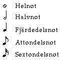
Här stannar vi vid sextondelsnoter, men det finns även trettiotvåondelsnoter och sextifjärdedelsnoter.
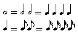
Vi sa att varje notvärde är hälften så stort som det föregående. Det innebär (som du ser på bilden ovan) att en helnot är lika lång som två halvnoter eller fyra fjärdedelsnoter. Du ser också att en fjärdedelsnot är lika lång som två åttondelsnoter eller fyra sextondelsnoter. Av detta följer att en helnot är lika lång som åtta åttondelsnoter eller sexton sextondelsnoter.
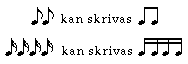
När man skriver enstaka åttondels- eller sextondelsnoter använder man en eller två så kallade vimplar. Men man kan också binda ihop grupper av åttondels- eller sextondelsnoter med en eller två balkar som på bilden ovan.
Om du skriver trettiotvåondels- eller sextifjärdedelsnoter använder du tre, respektive fyra vimplar eller balkar.
Tystnad kan också vara en del av musiken. Precis som med tonerna måste man kunna precisera hur lång tystnaden ska vara. Därför finns det paustecken som precis som noterna har olika tidsvärden, hel, halv, fjärdedel och så vidare.
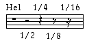
Här ovan ser du de olika paustecknen. Vi har lagt in dem i ett notsystem så att du ser att helpausen hänger under en notlinje och halvpausen ligger ovanpå notlinjen. Du ser att åttondels- och sextondelspauserna har ett slags näsor som sticker ut. Trettiotvåondels- eller sextifjärdedelspauserna har tre respektive fyra sådana "näsor".
För att det ska bli lättare att läsa, delar man in ett musikstycke i enheter som är lika stora, så kallade takter. Dessa takter skiljs åt med lodräta taktstreck. I början av ett stycket står det vilken taktart det går i. Det kan till exempel vara 4/4 (fyra fjärdedelstakt).
Det innebär att varje takt ska innehålla noter och/eller pauser som exakt motsvarar fyra fjärdedelsnoter, varken mer eller mindre. Det kan vara en helnot, eller fyra åttondelar och en halvnot, eller tre fjärdedelar och fyra sextondelar. Här nedan ser du ett exempel på två takter i 4/4.
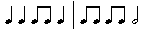
Det är inte godtyckligt vilken taktart man väljer. Det är skillnad i känsla och rytm mellan fyra fjärdedelstakt och valstakt som är 3/4 (tre fjärdedelstakt). Vi ska försöka illustrera det med några textexempel. Den här melodin går i 4/4. Det betyder att man ska räkna fyra slag i takten. Vi markerar varje "etta".
(1) Mors lilla Olle i (1) skogen gick (1) rosor på kinden och (1) solsken i blick
Jämför detta med en typisk valsmelodi där man räknar tre slag i takten:
(1) Rönnerdal han (1) skuttar med ett (1) skratt ur sin (1) säng
Många låtar börjar med en eller flera toner före ettan. Detta kallas upptakt. Vi tar två exempel på det också. Först i 4/4, sen i 3/4:
Jag trivs (1) bäst i öppna (1) landskap ner vid (1) havet vill jag (1) bo
Det var så (1) roligt jag måste (1) skratta, det kom en (1) trekantig gubbe (1) in
Om 4/4 och 3/4 är de två vanligaste taktarterna så är kanske den tredje vanligaste 6/8 (sex åttondelstakt). Den ger ofta en mjuk gungande känsla och man räknar sex slag i takten. Många ballader går i 6/8. Ett typiskt exempel kommer här (med upptakt):
There (1) is a (1) house in (1) New Orleans (1) they (1) call the (1) rising (1) sun
En vanlig taktart är också 2/4. Det kan vara hugget som stucket om man ska skriva 4/4 eller 2/4, men 2/4 ger en lite "struttigare", polkaartad rytm. En del östeuropeisk och asiatisk folkmusik går i 5/8 eller 7/8. Det kan låta ovant för västerländska lyssnare.
Om man sätter en punkt efter en not så förlänger man denna not med halva dess värde. En punkterad halvnot får längden en halvnot plus en fjärdedelsnot. En punkterad åttondel får längden en åttondel plus en sextondel. Se här:
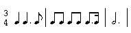
Vi har tre fjärdedelstakt. Varje takt ska alltså innehålla värdet av tre fjärdedelar. Den första takten innehåller en fjärdedel, en punkterad fjärdedel (dvs 1/4 + 1/8) och en åttondel. Nästa takt innehåller fyra åttondelar, en punkterad åttondel (dvs 1/8 + 1/16) och en sextondel. Sista takten innehåller en punkterad halvnot (dvs 1/2 + 1/4).
Det är rena matten. Det är bara att räkna ut att det stämmer. Just den punkterade halvnoten är vanlig i 3/4 när man vill fylla en takt. En helnot går ju inte att använda eftersom den är fyra fjärdedelar lång.
Pauser går att punktera precis som noter och de förlängs på samma sätt med halva sitt värde. En punkterad fjärdedelspaus har värdet 1/4 + 1/8.
Tänk dig en fyra fjärdedelstakt. Klappa eller stampa fyra slag i takten. 1, 2, 3 ,4. Lägg sedan till åttondelar genom att säga högt 1, 2, 1, 2, 1, 2, 1, 2. På varje slag i takten ska det in en etta och en tvåa. Försök sedan att säga 1, 2, 3 på varje taktslag. Du märker att de tonerna måste bli lite kortare och snabbare om du håller grundtempot. Prova sedan att fylla en takt genom att säga 1, 2, 1, 2, 1, 2, 3, 1, 2, 3. När man skriver det i notskrift ser det ut så här:
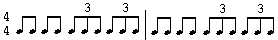
Grupperna av tre åttondelar med en trea över sig kallas för åttondelstrioler. Det finns även sextondels- fjärdedels och halvnotstrioler, ja för samtliga notvärden. De fungerar så att tre noter ska ta lika mycket tid som två noter av samma sort. Här ovan tar tre åttondelar lika mycket tid som två åttondelar. Vi ger några exempel till:
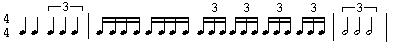
Om du har åttondelar eller sextondelar som är förenade med balkar, räcker det om du skriver en trea över balken. Däremot om du har enstaka ogrupperade noter (som fjärdedelarna och halvnoterna ovan), måste du förena dem med en klammer.
När man skriver ut taktarten i noterna använder man inget bråkstreck. Vi har ju redan notlinjerna. Här nedan ser du tre exempel på skrivsätt, först vanlig 3/4. Sedan ser du något som är ganska vanligt, att man i stället för 4/4 skriver bokstaven "C". Det tredje exemplet med det genomstrukna C:et kallas à la breve. Det är 4/4 men ska räknas med två slag i takten.
Bokstaven C ("common time") används ibland istället för 4/4, ett liknande C fast delat uppifrån och ned av ett vertikalt sträck kan på liknande användas istället för 2/2 (Fast fram tillochmed så sent som Bramhms kunde det ofta beteckna 4/2s takt.)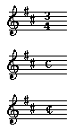
Du ser att det tillkommit en massa krumelurer i notsystemet. De har inget med rytmen att göra utan med tonhöjden. Och det ska vi ägna oss åt nu.
Alla toner har sin plats i notsystemet, på eller mellan linjerna. Det enda man behöver göra är att namnge en plats så följer alla andra platser av sig själv. Det gör man med olika klaver (obs, uttalas med betoning på a:et).
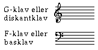
Den övre klaven kallas G-klav (eller diskantklav) därför att den ringar in den andra linjen nerifrån och säger att där ligger tonen G. Den nedre klaven kallas F-klav (eller basklav) därför att de två punkterna ringar in andra linjen uppifrån och säger att där ligger tonen F.
De flesta instrument- och sångnoter använder G-klaven, men vissa djupare instrument använder F-klav. I pianonoter har man två notsystem varav det övre har G-klav och det undre F-klav. I princip är det övre för högerhanden och det undre för vänsterhanden.
Noten markerar (vad jag tror är) ettstrukna (eller på engelska "central C") C för diverse klaver. Den näst första respektive näst sista är de vanligast förekommande G- respektive F-klaverna.
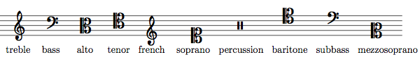
(Ifrån http://en.wikipedia.org/wiki/Alto_clef)
Ibland komprimeras åxå de fyra systemen till två, i platssparande syfte, detta särskilt i enklare musikstycken. I dessa fall skrivs vanligtvis sopran- och altstämman tillsammans på den övre notraden, med en G-klav, och tenor- och basstämmor skrivs i det undre notsystem med en F-klav.
I Madeneine Ugglas bok För kör hittade jag (på sidan 116) följande illustration av lämpliga röstomfång för de olika körstämmorna. (Det finns också MIDI-filer för de olika stämmorna: sopran alt tenor bas, och oggfiler: sopran alt tenor bas ifall du vill lyssna på dem.)
Som sagt om man vet en tons läge så är det bara att räkna ut de andra tonernas lägen. På bilden nedan har vi lagt in alla vita tangenternas lägen:
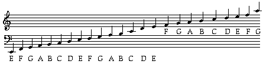
Du ser att F:et och G:et hamnat rätt och att alla andra toner följer efter. Notera det låga E:et, C:et mellan systemen och det högsta G:et. Där finns det inga linjer. Då får man rita dit så kallade hjälplinjer. Om du behöver skriva ännu lägre eller ännu högre toner så får du använda fler hjälplinjer.
Man noterar de svarta tangenterna helt enkelt genom att sätta kors eller b framför den not det gäller.
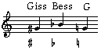
Du ser att vi skrivit ett G# och ett Bb, men sedan kommer att nytt tecken. Det kallas för återställningstecken. Om man har höjt eller sänkt en ton och sedan vill spela den ordinarie tonen så använder man återställningstecknet. I exemplet ovan återställer vi Gisset till ett G.
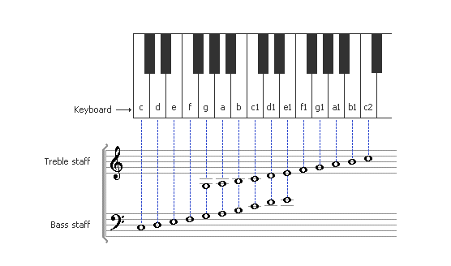
Du minns från musikläran att tonarten G-dur har ett kors. Det vill säga varje gång det står F i noterna ska man spela Fiss. A-dur har tre kors och F#-dur har sex. För att slippa skriva ut alla dessa kors i noterna markerar man det bara i början av varje notsystem, så här:
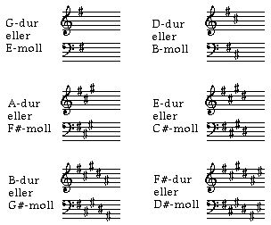
Det som gäller korstonarterna gäller även betonarterna. För att slippa en massa b:n som skräpar ner i noterna markerar man bara i början av varje notsystem, så här:
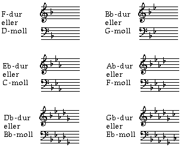
Då förstår du att om det varken står kors eller b i början av notsystemen så går stycket i C-dur eller A-moll. De tonarterna har ju inga förtecken.
Nu kanske du undrar hur man ska veta om ett stycke går i dur eller i motsvarande parallellmolltonart. Det vet man inte förrän man spelar stycket, men ett nästan säkert knep är att titta på sista tonen. De flesta stycken slutar på grundtonen. Om låten har ett kors och slutar på E går den nog i E-moll.
Om du tar en vanlig skolblockflöjt (en sopranblockflöjt) och täcker alla hålen och blåser så får du (om du kan spela) tonen C. Det är flöjtens grundton. Man brukar säja att en sopranblockflöjt är stämd i C.
Alla blåsinstrument har en sådan grundton. En klarinett är stämd i Bb, en altsaxofon i Eb. När man skriver noter för en altsax låtsas man att Eb:et är ett C, för att slippa en massa förtecken. När saxofonisten spelar ett C enligt sina noter är det i verkligheten ett Eb.
Detta betyder att en pianist som kompar ett altsaxstycke i C-dur, måste spela i Eb-dur. Spelar saxofonisten i Bb-dur (två b) måste pianisten spela i Db-dur (5 b). Om en klarinettist är med i samma stycke är hans noter skrivna i Eb-dur (3 b).
En gitarrist spelar gärna i E-dur. Den tonarten ligger bra på gitarren. För ett Bb-instrument (klarinett, tenorsax, trumpet, trombone m.fl.) däremot motsvarar det F#-dur (6#) och är ganska jobbigt att spela. Blåsare föredrar tonarterna F, Bb, Eb och Ab.
En som sjunger provar gärna olika tonarter för att hitta en som passar den egna rösten. Men man måste kompromissa. Om A känns perfekt måste han eller hon kanske ändå höja till Bb för att det ska passa blåsare. Och om Ab känns underbart kanske det endå måste sänkas till G för att göra en gitarrist glad.
Notskrivare är ofta mycket ekonomiska. Om en melodisnutt upprepas vill de helst inte skriva ut samma noter igen. I stället använder de repristecken. Titta här:
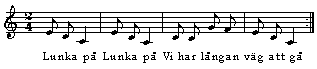
Kompositören vill att vi ska lunka två gånger. Därför har han ritat ett vanligt och ett tjockt taktstreck och satt dit två punkter. Det betyder att vi ska ta om det en gång till. Därefter kommer ett mer sprittande parti som jag inte skrivit, men som du kanske kommer ihåg: "Hopp mor Annika. Hopp mor Annika osv.
Vi tar och tittar på ett exempel till som är lite mer komplicerat, men faktiskt ganska användbart:
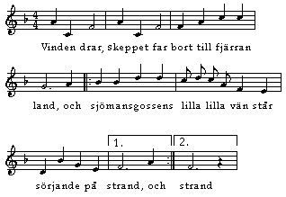
I det förra exemplet skulle man upprepa stycket från början. Då räcker det med ett repristecken. Men här kommer reprisen på slutet. Då är det viktigt att även markera var man ska börja. Notera hur punkterna är riktade inåt mot reprisen.
Sedan har vi de här siffrorna på slutet. De fungerar så att först när man kommer till den takt som markerats med 1 så sjunger man den. Men nästa gång efter reprisen, hoppar man över den takten och går direkt till den takt som markerats med 2.
Ibland kan du hitta ordet "Fine" i noterna. Det betyder slut, men det ska du inte bry dig om första gången du ser det. Däremot står det då i slutet av stycket "Da Capo al Fine" eller bara "D C al Fine". Det betyder att du ska spela stycket en gång till fram till det ställe där ordet "Fine" står.
Vi sa tidigare att man inte kan använda en helnot i 3/4. Hur gör man då om man vill ha en ton som är längre än tre fjärdedelar? Ja, titta här:
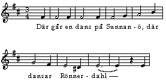
Bågen under det långa E:et i "...dahl" säger att den punkterade halvnoten och fjärdedelen i nästa takt ska bindas ihop och sjungas som en lång ton. En sådan båge kallas för legatobåge.
När legatobågen binder ihop noter som ligger på samma ton, ska den tonen spelas som en ton. Men man kan också binda ihop olika toner för att visa att en fras ska spelas lite mer bundet.
Italienska är musikspråket framför andra. Många musiktermer är på italienska. Det är väl inte värre än att datatermer är på engelska. Här följer nu några termer som beskriver hur starkt man ska spela:
| pp | pianissimo | mycket svagt |
| p | piano | svagt |
| mp | mezzopiano | måttligt svagt |
| mf | mezzoforte | måttligt starkt |
| f | forte | starkt |
| ff | fortissimo | mycket starkt |
Man skriver ut förkortningarna från pp till ff i noterna. Oftast är de i fet och kursiv stil. Om man vill att musiken ska öka gradvis i styrka skriver man ordet "crescendo". Om man vill att musiken ska minska gradvis i styrka skriver man ordet "diminuendo".
Man kan ange ett exakt tempo som man vill att ett stycke ska spelas i genom att till exempel skriva att en fjärdedel = 132. Den siffran avser slag per minut. Man tar då fram tempot med hjälp av en metronom. Men det är vanligare att man skriver de italienska termerna som är lite mer tolkningsbara:
| Slag per minut | Tempoanvisning | Betyder (ungefär) |
| 54 - 60 | adagio | långsamt |
| 63 - 69 | andante | lungt gående |
| 88 - 105 | moderato | rörligt |
| 106 - 120 | allegretto | tämligen raskt |
| 132 - 160 | allegro | raskt |
| 184 - 208 | presto | mycket fort |
Som du ser fattas det en del termer i ovanstående uppställning, men dem kan du slå upp om du känner att du vill ha fullständig koll.
| Svenska | Engelska | Förklaring |
|---|---|---|
| korsförtecken | sharp | ett förtecken (eng. accidental) |
| förtecken | accidental | |
| paus | rest | |
| upptakt | upbeat (anacrusis) | |
| takt | measure | |
| återställningstecken | natural (sign) | ett tillfälligt förtecken (eng. accidental) |
| korsförtecken | sharp | ett förtecken (eng. accidental) |
| repris | repeat | |: :| tecken |
| stämma | part | |
| taktart | meter | t.ex. tre fjärdedelstakt |
| skaft | stem | vertikal linje fäst vid nothuvudet på noter kortare än en helnot |
| balk | beam | linje som sammankopplar skaften på två eller flera noter istället för flaggor |
| flagga | flag | ornament på en notskaftet som indikerar att noten är kortare än en fjärdedelsnot |
| ettstrukna c | middle C (central C) | |
| G-klav (diskantklav) | G clef (treble clef) | |
| F-klav (basklav) | F clef (bas clef) | linjen mellan de två punkterna är "F below central C" |
| fermat | fermata | båge med en prick i ovanför not, indikerar förlängd ton eller paus av obestämd längd |
| legato, legatobåge | slur | binder två noter av olika tonhöjd, framförs som en glidning från den ena till den andra |
| båge, bindebåge | tie | binder två noter av samma tonhöjd, dessa spelas som en ton med de två bundna noternas sammanlagda längd |
| dur | major | |
| moll | minor |
{kind=link}